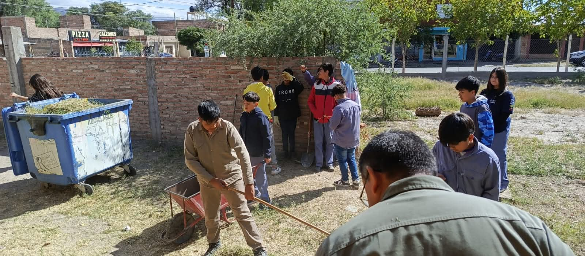
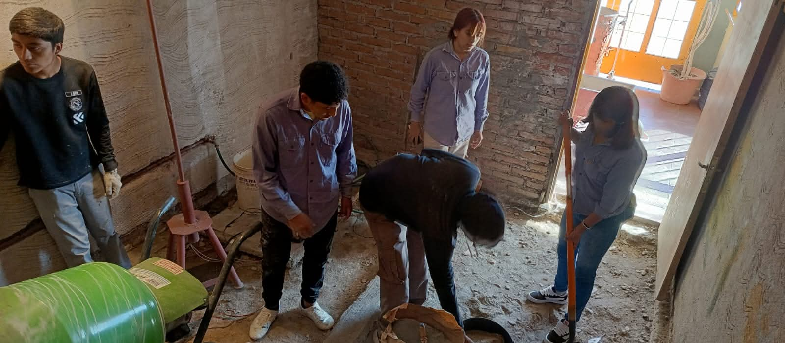
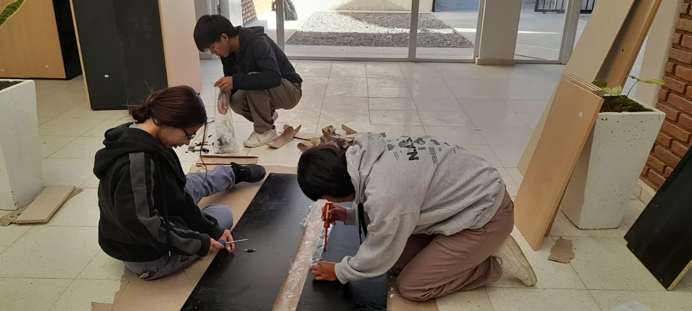
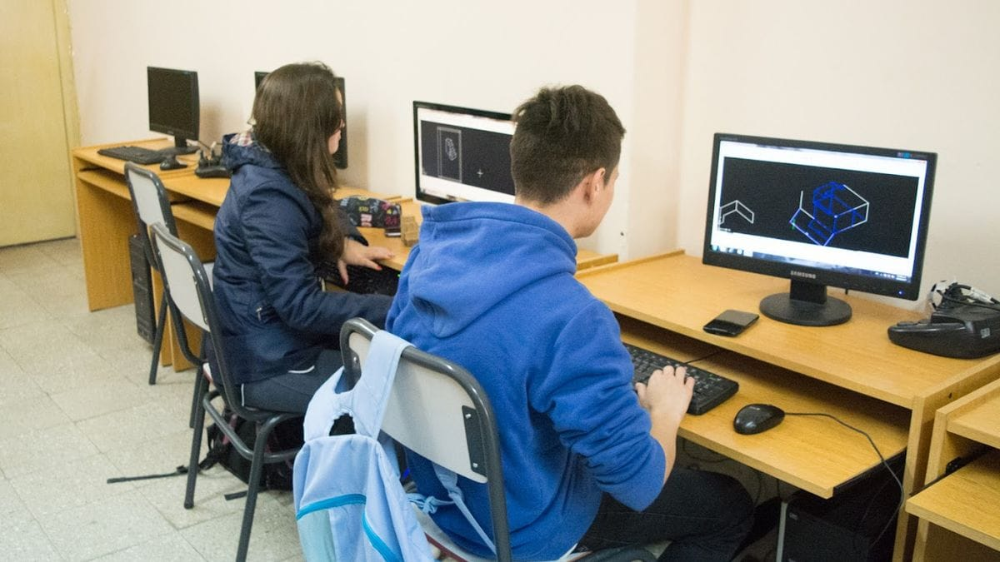

Plan de estudio
Una trayectoria técnica vinculada al proyecto y la obra
La modalidad forma técnicos capaces de intervenir en el diseño, la planificación, la ejecución y la evaluación de soluciones edilicias y constructivas.
Una orientación para quienes quieren proyectar, planificar, dirigir y evaluar procesos constructivos con una formación técnica sólida y aplicada.
.jpg)
Formación aplicada
Planos, evaluación técnica, obra, dirección y resolución de proyectos constructivos con una mirada profesional y concreta.
Plan de estudio
La modalidad forma técnicos capaces de intervenir en el diseño, la planificación, la ejecución y la evaluación de soluciones edilicias y constructivas.
Perfil del egresado
El Maestro Mayor de Obra puede intervenir profesionalmente en el área de la construcción, articulando diseño, gestión, evaluación y ejecución técnica.
Diseño
Elaborar anteproyectos y proyectos de soluciones edilicias y constructivas según necesidades concretas.
Obra
Dirigir la ejecución de procesos constructivos con seguimiento técnico y organización del trabajo.
Evaluación
Prestar servicios de evaluación técnica, peritajes y asesoramiento a terceros.
Futuro
Generar emprendimientos propios o continuar estudios superiores vinculados a construcción y arquitectura.
Talleres y campo
Durante los siete años de formación, los estudiantes participan en talleres, laboratorios, pasantías y visitas de estudio a obras en construcción para articular teoría y práctica.
La modalidad combina documentación técnica, interpretación de planos, evaluación de soluciones constructivas y experiencias concretas de trabajo.
Salida laboral
Los egresados pueden desempeñarse en tareas de proyecto, dirección, evaluación técnica, asistencia profesional y emprendimientos vinculados al rubro.
Fortalezas de la modalidad
Prácticas y talleres
La modalidad requiere observación, criterio técnico y resolución concreta, por eso las prácticas ocupan un lugar central en el recorrido formativo.




Imagen 1 de 4